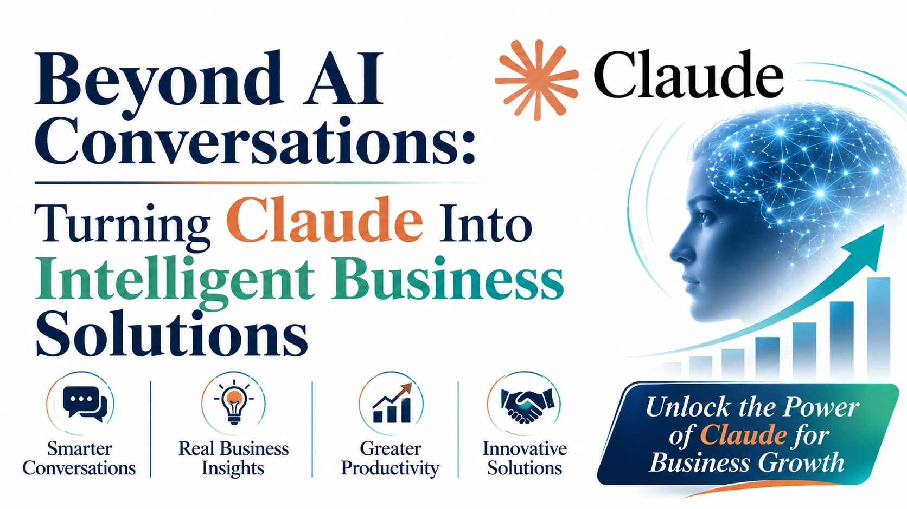

Beyond AI Conversations: Turning Claude Into Intelligent Business Solutions

Most teams meet Claude as a chat window. Type a question, get an answer, move on. That's a fine starting point, but it's also where most organizations stop, and it's a small fraction of what the model can actually do once it's wired into how a business runs.
The real shift happens when Claude stops being a tab you open for a quick answer and becomes part of the infrastructure: reading your documents, reasoning over your data, and acting inside the tools your teams already use every day.
From chat to capability
A conversation that ends when the browser tab closes delivers a single answer. A conversation connected to your knowledge base, your CRM, or your ticketing system delivers a working result, every time someone asks.
That difference, context versus a blank page, is what separates a novelty demo from a system people actually rely on.
Smarter conversations that remember context
A support agent shouldn't have to re-explain a customer's history every time they open a new thread. A finance lead shouldn't have to paste the same spreadsheet into chat each morning.
When Claude holds context across a workflow instead of a single exchange, conversations stop being isolated Q&A and start behaving like a colleague who was actually in the last meeting.
Real business insights, not just answers
There's a meaningful gap between a model that summarizes a document and one that connects three documents, a spreadsheet, and last quarter's numbers to tell you what actually changed and why it matters.
The second kind of output is what leadership teams can act on. The first is just a faster read.
Greater productivity across teams
The biggest productivity gains rarely come from one dramatic use case. They come from removing dozens of small frictions: drafting the first version of a report, triaging inbound requests, reconciling two systems that don't talk to each other.
Multiply a few saved minutes by every person on a team, every day, and the number stops looking small.
Innovative solutions built on Claude
Once Claude is integrated rather than bolted on, new product ideas start to look possible: an internal copilot that understands your product catalog, a client-facing assistant that can actually check order status, a review layer that flags risk in a contract before a human reads it.
These aren't hypothetical. They're the kind of builds that go from idea to production once the integration work is done properly the first time.
Where to start: building the plan
None of this happens from a single prompt. It takes a clear AI implementation roadmap that sequences the work: which systems connect first, who owns data quality, what gets measured, and how the rollout expands once the first use case proves itself.
Teams that skip this step tend to end up with an impressive demo that never makes it past one department.
Put Claude to work inside your business
Talk to the team about integrating Claude into your existing systems, with a plan built around your actual workflows.
Visit zignuts.com